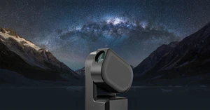

The Astro Spot
Your home for astrophotography, beginner-friendly guides, and a powerful AI assistant to help you on your own astrophotography adventures.
Start ExploringFeatured Post

My Seestar S50 Review: A Beginner's Gateway to the Cosmos
My honest review after a month of use, breaking down the features, limitations, and who this powerful smart telescope is really for.
Read More →